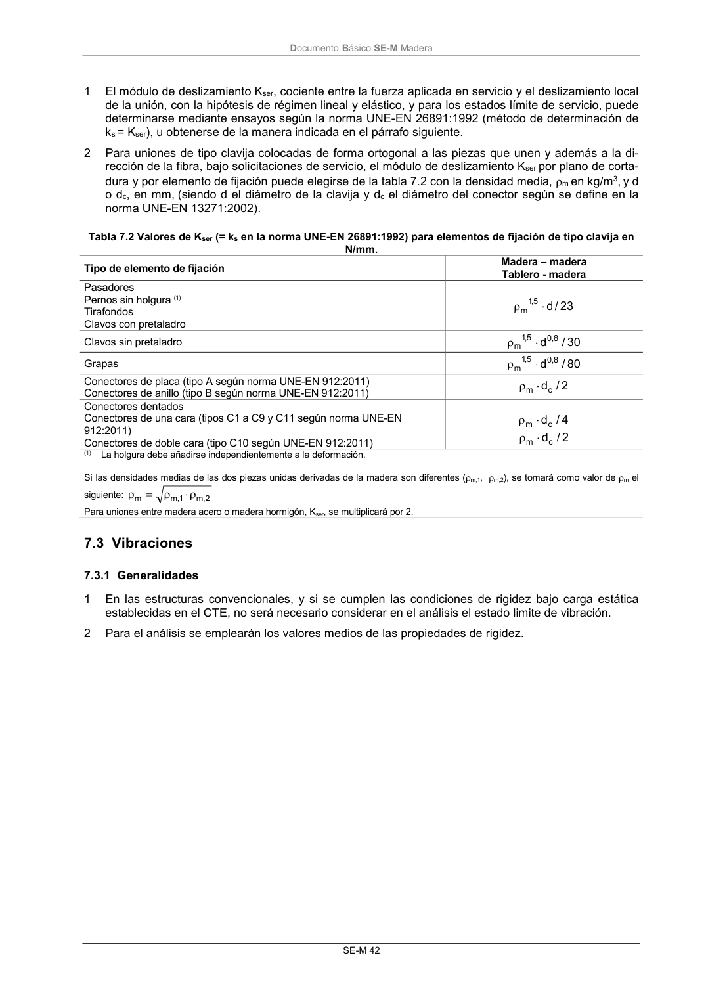
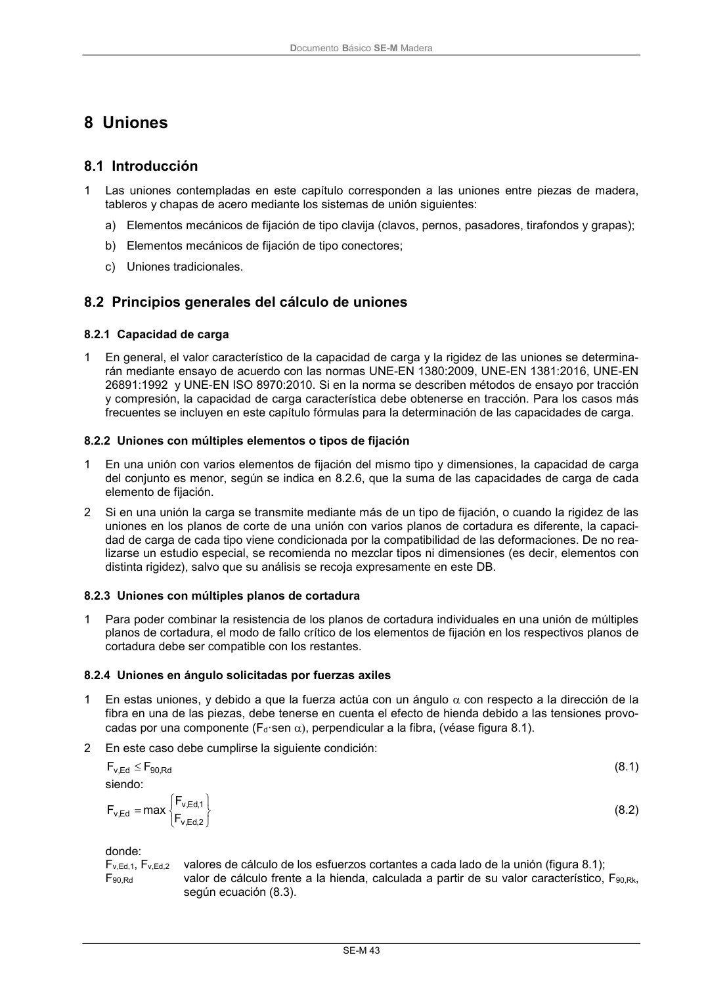

DB-SE-M · Fragmento de PDF p48 · versión 2019-12-20 · capa oficial
Formatos: JSON compacto · Markdown · PDF fuente
Ámbito del documento · texto del ámbito · documento y tablas
ID técnico a0096 · PDF pág. 48-49 · jerarquía no validada por persona · no es capítulo: sin_linea_de_encabezado · padre: raíz · literal original en el contenido: «7.3 Vibraciones 7.3.1 Generalidades»
7.3 Vibraciones 7.3.1 Generalidades 7.3.1 Generalidades 1 En las estructuras convencionales, y si se cumplen las condiciones de rigidez bajo carga estática establecidas en el CTE, no será necesario considerar en el análisis el estado limite de vibración. 2 Para el análisis se emplearán los valores medios de las propiedades de rigidez. DocumentoBásico SE-M Madera SE-M 43


PDF fuente redistribuible: copia fiel enlazada en esta página (SHA256 verificado).